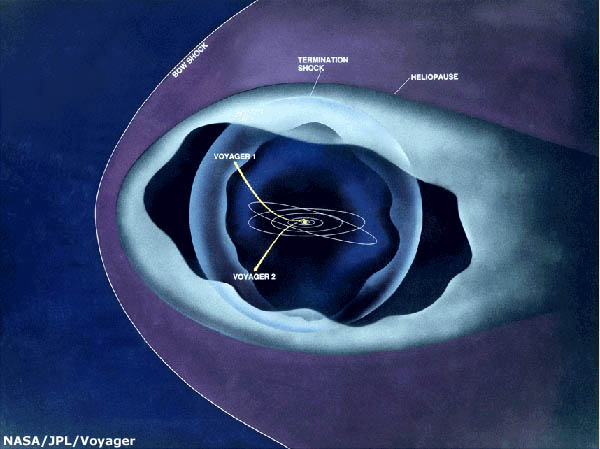

Voyager 1, now the most distant human-made object in the universe, and Voyager 2, close on its heels, continue their ground-breaking journey with their current mission to study the region in space where the Sun's influence ends and the dark recesses of interstellar space begin.